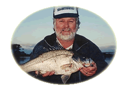
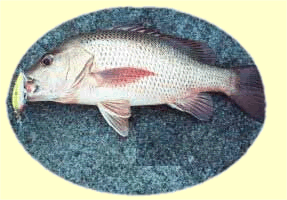

Koolabung LuresHi! I'm Eddie Studman, owner of Koolabung Lures. I make hand-crafted fishing lures in Port Macquarie, Australia and supply to a large number of fishing tackle stores throught the country.Please bear with me as I upgrade the website to show my latest range of lures enjoyed by fishing enthusiasts Australia-wide.
The History of Koolabung Lures
My first introduction to lure fishing came on the banks of the mighty
Macleay, targeting Bass just 4km above Kempsey in Northern NSW. Spinning
Bass intrigued me enough and quickly I moved on to other quarries in saltwater
such as flathead.In 1970 my thirst for other targets was soon quenched when a good friend from Sydney drew my attention to the art of luring bream. Bream spinning was seen as something of a stunt in those days a by-catch of a flathead session but these days has become the norm with B.R.E.A.M. series comps targeting these species by lure only means. My profession was at that time of a self-employed painter decorator. Painting gave me an insight into colour schemes helping me design appropriate attracting patterns for different species of fish.
|
 Eddie Studman |
|
|
 Mangrove Jack caught with a Koolabung Lure |
After designing
and making lures for mates and myself which worked rather well plus saved
me a few bucks, I decided to try and make some saleable products and break
into the cottage lure industry. It wasn't long before I was in full time
production with the demand for my lures keeping me more away from my passion
of fishing. All my products are individually and lovingly hand shaped and assembled. All hooks (VMC) rings and towing clips are of the highest quality to ensure a strong reliable product for all your piscatorial interludes. The lures I have designed are ideal for a vast array of situations and styles of fishing. All lures come in a variety of sizes and natural and attractor colours, which should cover any water conditions in both salt and fresh water applications. |